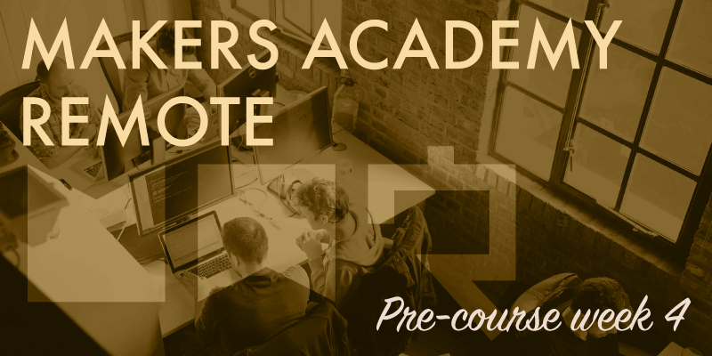

After the disproportionately large amount of work expected from us last week, this final pre-course week has brought with it a very welcome decrease in workload.
A slower pace
There was no compulsory reading this week, there were no large coding challenges to complete, only a simple code kata called FizzBuzz (which I'd seen previously during the remote taster day) and instructions to solve FizzBuzz as many times as we could, and in as many different ways as we could throughout the week, each time pairing with somebody different from our cohort. The reason for all this pairing is to get us used to pair coding together before the full-time course begins next week.
This has been a really enjoyable week for me, it's been great to meet and pair with some other students from my cohort. I've managed to pair with at least one, sometimes two different people each evening, which has been a challenge in itself due to the need to organise around everybody's availabilities. Solving the same kata repeatedly with so many different people has been more educational than I'd have imagined, because I've seen several different ways of solving what I initially thought to be a basic problem with a limited solution. Aside from the variety of coding techniques employed, it's also been great learning to pair effectively with different personalities and experience levels. I've been in pairings in which I was definitely the lesser experienced of the two, pairings in which I felt I was the more experienced, and some very equal pairings. I've paired with some quiet and introverted people, and others who had no problem making themselves heard. In every case I've learned something new that will assist me on the course, and throughout my career.
Put your feet up do a bit of studying
This weekend has been even more easy going than the week, with the sole instruction being to relax before the course begins. I've half obeyed this instruction, by reading through the initial chapters of The Well-Grounded Rubyist by David A Black with my feet up.
I finished working my full-time job at the end of this week, which feels quite surreal after working there for the past six years, and being in full-time employment for the past thirteen years. As I write this it's Sunday evening, and the full-time course begins tomorrow morning. I'm not sure yet how frequently I'll be updating this blog during the course, it might be short daily posts, longer weekly updates or perhaps only posting updates when something of note happens. However in one form or another I'll be keeping this blog active as I experience the course, and hopefully it'll be of some use to others looking to attend Makers Academy in the future, as well as interesting to anybody else who might want to read it too.
Here's to the January 2016 cohort – good luck!